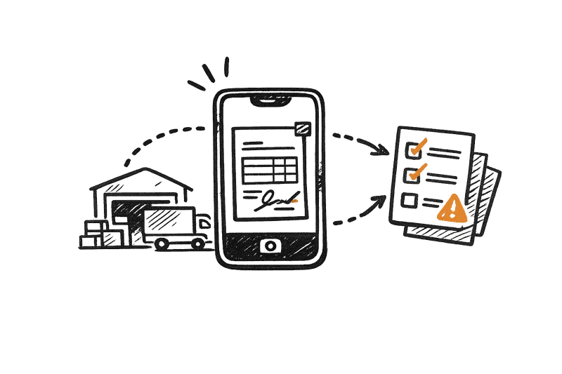

Frachtbriefe, Lieferscheine, Ablieferbelege und weitere Transportdokumente kommen als Handyfoto aus dem Fahrerhaus, als Scan vom Umschlagplatz oder per E-Mail von Auftraggebern und Partnern.
Stapelweise erkennt die Dokumentart, ordnet den Beleg der richtigen Sendung zu, liest die benötigten Angaben aus und gleicht sie mit dem Transportauftrag ab. Fehlende Unterschriften, unklare Fotos oder abweichende Packstückzahlen werden gekennzeichnet und gezielt an Disposition oder Abrechnung weitergegeben.
Die Ware ist zugestellt. Im Transportmanagementsystem fehlt trotzdem noch der Abliefernachweis.
Der unterschriebene Frachtbrief liegt im Fahrerhaus, ein Lieferschein wurde schief fotografiert und ein weiterer Beleg kommt später als Sammel-PDF aus dem Terminal. Bevor die Abrechnung starten kann, müssen Mitarbeitende die Unterlagen öffnen, der richtigen Sendung zuordnen und prüfen, ob die notwendigen Angaben vorhanden sind.
Das verzögert den Rechnungslauf und bindet Zeit in Disposition, Service und Abrechnung.
Stapelweise übernimmt die vorbereitenden Schritte:
direkt in Ihr Transportmanagementsystem (TMS) oder die digitale Sendungsakte.
Zu Beginn legen wir gemeinsam fest, welche Dokumentarten verarbeitet und welche Angaben daraus übernommen werden sollen.
Die Konfiguration kann sich nach Auftraggeber, Verkehrsart, Standort und Prozess unterscheiden. So werden nur die Daten ausgelesen und geprüft, die für Disposition, Sendungsverfolgung, Abrechnung oder Zollabwicklung tatsächlich benötigt werden.
Dazu können gehören:
Transportdokumente gehen über Fahrer-Apps, E-Mail-Postfächer, Scanstrecken, Kundenportale oder Schnittstellen ein.
Stapelweise führt die Dokumente in einem gemeinsamen Verarbeitungsschritt zusammen. Ein Foto aus dem Fahrerhaus kann dadurch ebenso verarbeitet werden wie ein mehrseitiges PDF aus dem Terminal.
Enthält eine Datei Belege aus mehreren Touren oder Sendungen, wird sie in einzelne Dokumente zerlegt. Zusammengehörige Seiten bleiben miteinander verbunden.
Stapelweise erkennt, ob es sich zum Beispiel um einen CMR-Frachtbrief, einen Lieferschein, einen Ablieferbeleg, einen Palettenschein oder einen Schadensvermerk handelt.
Anschließend liest Stapelweise genau die Angaben aus, die für den jeweiligen Prozess benötigt werden.
Bei Frachtbriefen und Ablieferbelegen können das zum Beispiel sein:
Bei Zoll- und Exportdokumenten können definierte Referenzdaten wie MRN, Ausfuhrdatum, Versender, Empfänger oder Warenpositionen übernommen werden.
Sendungsnummern, Auftragsnummern, Absender, Empfänger, Kennzeichen und weitere eindeutige Angaben werden mit den vorhandenen Transportdaten abgeglichen. Unklare Zuordnungen werden nicht automatisch übernommen, sondern zur Prüfung vorgelegt.
Stapelweise trifft keine rechtliche, zollfachliche oder gefahrgutrechtliche Entscheidung.
Das System führt formale und regelbasierte Vorprüfungen durch. Dazu können gehören:
Unvollständige oder abweichende Vorgänge werden mit einem konkreten Prüfhinweis an Disposition, Service, Zollteam oder Abrechnung weitergegeben.
Bereits strukturierte Auftragsdaten aus EDI oder dem Transportmanagementsystem dienen als Referenz für Zuordnung und Abgleich. Sie müssen nicht erneut aus einem Dokument ausgelesen werden.
Stapelweise vergibt nicht eigenständig Zolltarifnummern oder Gefahrgutklassen. Solche Angaben können aus Dokumenten ausgelesen oder mit freigegebenen Stamm- und Auftragsdaten abgeglichen werden.
Die ausgelesenen und formal vorgeprüften Angaben werden anschließend in das vereinbarte Datenformat übertragen und zusammen mit dem Originaldokument bereitgestellt.
Je nach Systemlandschaft können die Ergebnisse zum Beispiel übergeben werden an:
Ihre Mitarbeitenden arbeiten weiterhin in den vertrauten Systemen. Stapelweise bereitet die Dokumente im Hintergrund vor.
Fahrerinnen und Fahrer fotografieren den unterschriebenen Ablieferbeleg direkt nach der Zustellung. Stapelweise prüft die Bildqualität, liest die Sendungsdaten aus und ordnet den Beleg dem Transportauftrag zu.
Abrechnungsrelevante Nachweise werden erkannt und der richtigen Sendung zugeordnet. Fehlende oder unklare Dokumente sind sichtbar, bevor die Rechnung erstellt wird.
Mehrere Frachtbriefe, Lieferscheine und Palettenbelege werden in einem Schritt gescannt. Stapelweise trennt die Dokumente und verteilt sie auf die zugehörigen Sendungsakten.
Schadensvermerke, Fotos, Ablieferbelege und weitere Nachweise werden einem bestehenden Vorgang zugeordnet und für die Bearbeitung zusammengestellt.
Referenznummern und weitere definierte Angaben werden aus Zolldokumenten übernommen und mit dem Transportauftrag abgeglichen. Die zollfachliche Prüfung bleibt bei den zuständigen Mitarbeitenden und Systemen.

Nach der Zustellung fotografiert der Fahrer den unterschriebenen Ablieferbeleg. Das Bild ist leicht schief und enthält handschriftliche Ergänzungen.
Stapelweise richtet das Foto aus, erkennt den Ablieferbeleg und liest Sendungsnummer, Empfänger, Lieferzeit und Packstückzahl aus. Die Angaben werden mit dem Transportauftrag abgeglichen.
Die Sendungsnummer und der Empfänger stimmen überein. Bei der Packstückzahl gibt es jedoch eine Abweichung. Der Beleg wird deshalb nicht unbemerkt weitergegeben, sondern mit einem konkreten Prüfhinweis an die Disposition übermittelt.
Nach der Klärung steht das Dokument zusammen mit den strukturierten Angaben für die Abrechnung bereit.
Zum Schaufenster →Ablieferbelege stehen kurz nach der Zustellung in der Sendungsakte bereit. Die Abrechnung muss nicht auf Papierbelege aus dem Fahrerhaus warten.
Auftrags- und Sendungsnummern werden automatisch erkannt und mit den vorhandenen Transportdaten abgeglichen.
Unterschriften, Seiten oder abrechnungsrelevante Dokumente können gezielt geprüft werden, bevor ein Vorgang in der Abrechnung hängen bleibt.
Stapelweise verarbeitet PDFs, Scans und Handyfotos. Unscharfe, abgeschnittene oder nicht eindeutig lesbare Inhalte werden zur Prüfung gekennzeichnet.
Das Originaldokument wird zusammen mit den ausgelesenen Angaben in der Sendungsakte abgelegt.
Dokumente und Daten werden an die angebundenen Transport-, Abrechnungs- oder Dokumentenmanagementsysteme übergeben.
Stapelweise kann lokal, in einer kundenspezifischen VPC oder als Cloud-Lösung betrieben werden. Das Betriebsmodell wird an Ihre Anforderungen an Datenschutz, Informationssicherheit und Systemarchitektur angepasst.
Belege und Abweichungen sind direkt am Transportauftrag sichtbar. Mitarbeitende müssen nicht in Postfächern, Fahrer-Chats und Scanordnern suchen.
Abliefernachweise werden automatisch der richtigen Sendung zugeordnet. Fehlende oder unklare Angaben sind vor dem Rechnungslauf sichtbar.
Ein Foto oder Upload genügt. Das manuelle Benennen, Zuordnen und Weiterleiten des Belegs entfällt.
Transportdokumente, Empfangsbestätigungen und Schadensvermerke sind in der Sendungsakte schnell auffindbar.
Definierte Angaben aus Zoll- und Exportdokumenten stehen strukturiert zur Verfügung. Fachliche Entscheidungen bleiben beim zuständigen Team.
Stapelweise wird an bestehende Systeme angebunden und kann lokal, in einer VPC oder in der Cloud betrieben werden.
Stapelweise verarbeitet Dokumente verschiedener Auftraggeber und Partner. Unsichere Erkennungen werden zur Prüfung gekennzeichnet.
Vorhandene Daten aus dem Transportmanagementsystem dienen als Referenz für Zuordnung und Plausibilitätschecks.
Stapelweise bereitet vor und kennzeichnet Unstimmigkeiten. Disposition, Abrechnung und Fachbereiche entscheiden über die weitere Bearbeitung.
Jede ausgelesene Angabe kann zum zugrunde liegenden Dokument zurückverfolgt werden.
Die Ergebnisse können direkt in die angebundenen Systeme übertragen werden.
Stapelweise steht in drei Betriebsvarianten zur Verfügung.
Die Verarbeitung findet innerhalb Ihrer eigenen technischen Umgebung statt. Dokumente und Inhaltsdaten verlassen Ihr Netzwerk nicht.
Die Verarbeitung findet in einer isolierten, für Sie eingerichteten Cloud-Umgebung statt. Dokumente und Inhaltsdaten werden nicht außerhalb dieser Betriebsumgebung übertragen.
Stapelweise kann auch als verwaltete Cloud-Lösung betrieben werden. Speicherorte, Zugriffe und Auftragsverarbeitung werden vertraglich festgelegt.
Unabhängig vom gewählten Modell können Zugriffsrechte, Protokollierung, Speicherfristen und Schnittstellen an Ihre Anforderungen angepasst werden.
Testen Sie Stapelweise mit einem typischen Frachtbrief, Lieferschein oder Ablieferbeleg. Gemeinsam prüfen wir, welche Angaben zuverlässig erkannt werden, welche formalen Prüfungen sinnvoll sind und wie die Übergabe an Ihr Transportmanagementsystem aussehen kann.
Stapelweise an konkreten Beispielen erleben und testen
Was kann Stapelweise für Sie tun? Vereinbaren Sie ein persönliches Gespräch mit uns.